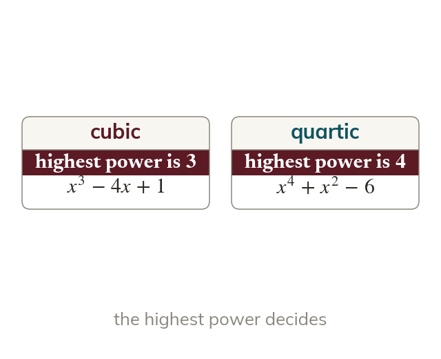

Naming by degree
A polynomial is named by its highest power of The number of terms does not matter. A cubic has a quartic and a quintic
A polynomial is named by the highest power of in it, so a cubic has a quartic has and a quintic has
The number of terms does not matter.
The number of terms does not matter.